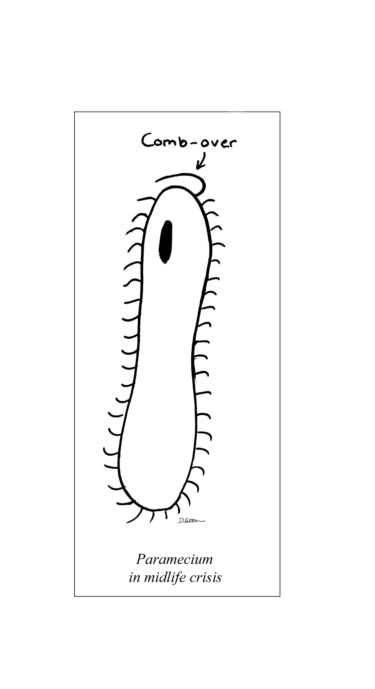
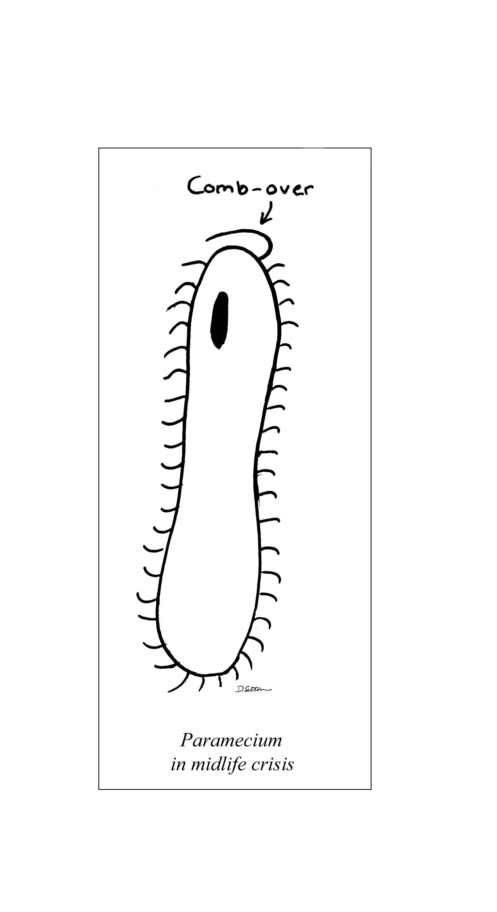

Hi! My name is Dolly, and I'm a Masters student in the Quantitative Methods in the Social Sciences program at Columbia. I worked for many years as an editor for Natural History magazine and for Forbes, and my writing has appeared in Discover, Forbes, AARP the Magazine, and others. I've edited articles on everything from the altruism of slime mold to the physics of multiple universes, and wrote an eight-page article for Discover on everybody's favorite barely-there particle, the neutrino. My cover stories for Forbes were featured on National Public Radio, where all my "ums" were edited out. Previously I was an analyst for Morningstar, and before that I earned a Masters degree in English literature.
As a side project, I am working on a dual scientific biography set at the dawn of the nuclear age that combines words and images, and that explores the politics of memory. My cartoons and illustrations have appeared in Natural History and Commonweal.
Here are a couple of my cartoons:
 
